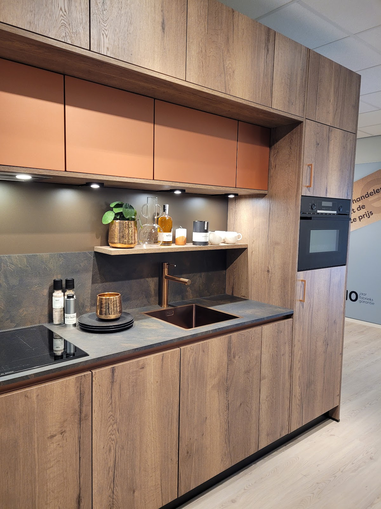
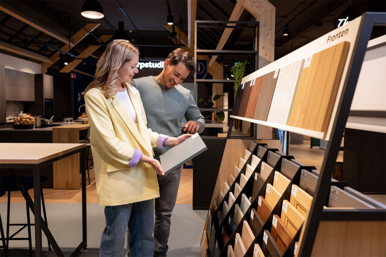
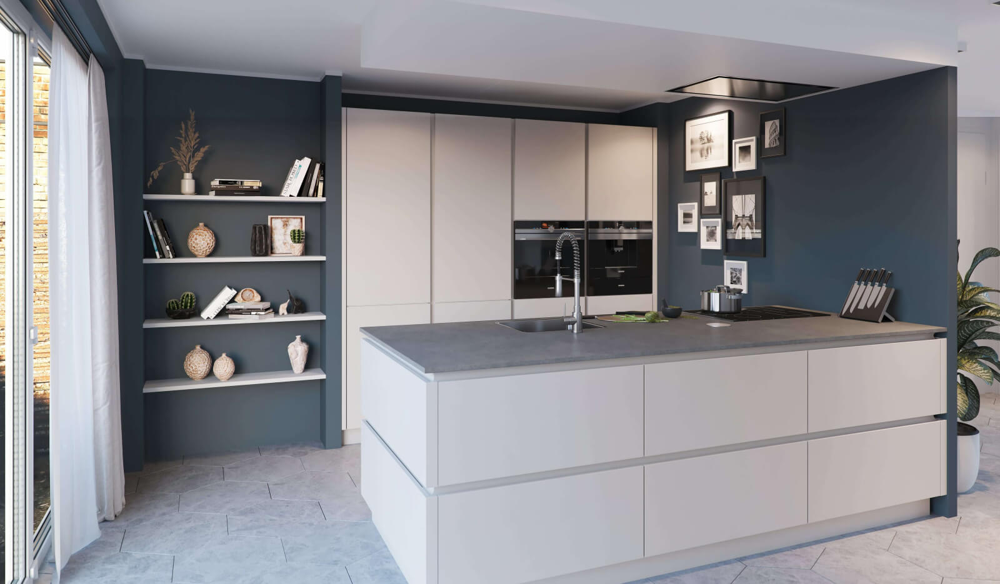
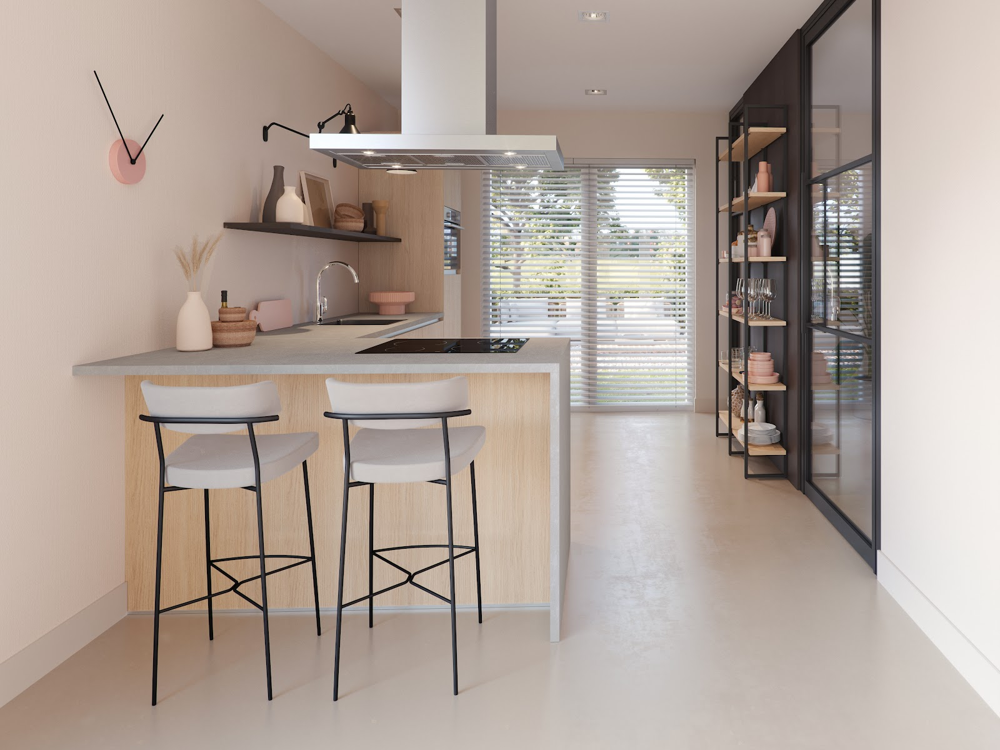
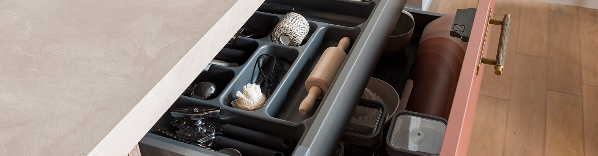
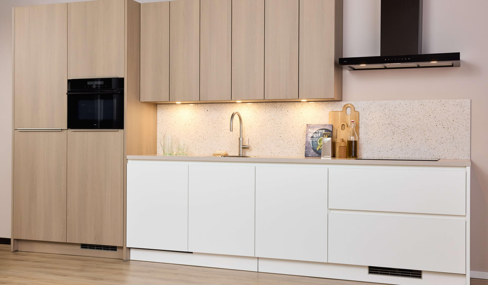
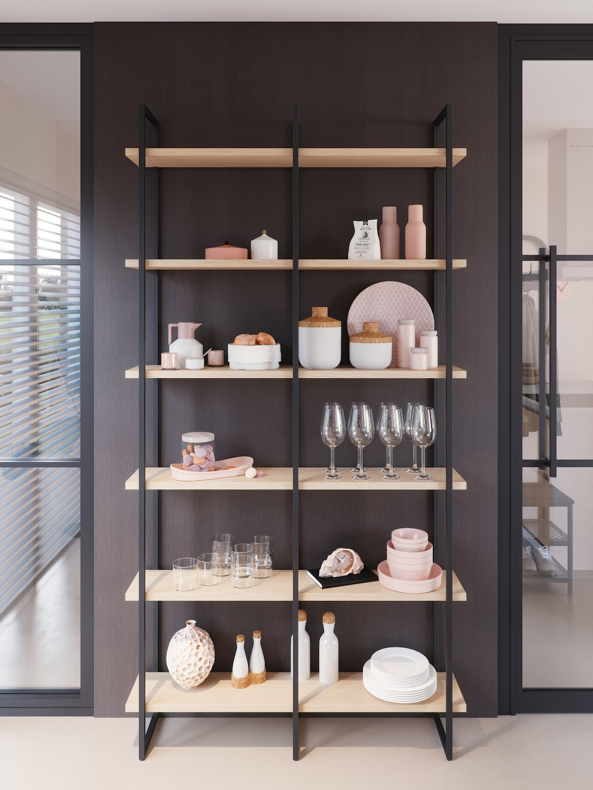
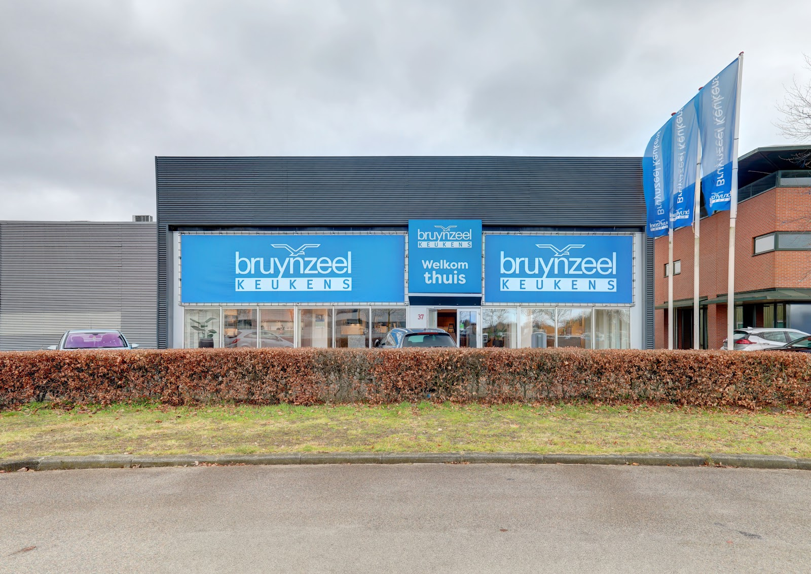

Oriënterend gesprek
Voor als je nog rondkijkt. Een adviseur loopt met je door de showroom en praat met je over indeling, apparatuur, materialen en kleuren. Vrijblijvend, en zonder dat je iets wordt opgedrongen.
Keukenwinkel in Zwolle, aan de Marsweg
In onze showroom van ruim 800 m² denkt een keukenadviseur met je mee. Je krijgt vrijblijvend een 3D-ontwerp met een transparante offerte.

Uit onze showroom in Zwolle
Je vindt ons op de Keukenboulevard in Zwolle. Van een ruime leefkeuken met kookeiland tot een compacte, praktische opstelling: hier zie je de keukens in het echt, in allerlei stijlen, kleuren en opstellingen.
We laten regelmatig de nieuwste materialen, kleuren en slimme opbergoplossingen zien. Zo krijg je een compleet beeld van wat er vandaag mogelijk is.



Doordeweeks is het vaak wat rustiger in de winkel. In het weekend en op koopzondagen is het gezellig druk.
Iedere woonsituatie is anders. Daarom nemen we uitgebreid de tijd voor jouw wensen. Je kiest zelf welk gesprek bij je past.
Voor als je nog rondkijkt. Een adviseur loopt met je door de showroom en praat met je over indeling, apparatuur, materialen en kleuren. Vrijblijvend, en zonder dat je iets wordt opgedrongen.
Voor als je weet wat je wilt. Samen vertalen we je wensen naar een keuken die past bij je stijl, je ruimte en je budget. Je gaat naar huis met een 3D-ontwerp en een transparante offerte.
“Mooie keukens in de showroom (Zwolle) Prettige verkoper. Er wordt je niks opgedrongen. Met een duidelijke offerte en technische tekeningen huiswaarts gekeerd.”
Bij elk ontwerp kijken we naar hoe jij kookt, boodschappen doet en opruimt. We delen de keuken in volgens vijf zones, in een logische volgorde. Zo hoef je minder heen en weer te lopen.
En we stemmen de werkhoogte af op jouw lengte, zodat je niet hoeft te bukken of op je tenen te staan.

Hier ruim je de boodschappen uit: gekoeld in de koelkast, de rest in de voorraadkast.
Bestek, borden en glazen, het liefst vlak bij de vaatwasser.
Spoelbak, vaatwasser en een plek voor afvalscheiding.
Werkruimte tussen spoelbak en kookplaat, met lades voor kruiden, olie en werkbestek.
Kookplaat en oven, met pannen en ovenschalen binnen handbereik.

We vernieuwen de showroom regelmatig met nieuwe collecties. Daardoor zijn er steeds showroomkeukens beschikbaar tegen een aantrekkelijke prijs. Ze staan volledig opgesteld in de winkel, dus je ziet precies wat je koopt.
Een mooie kans om een complete kwaliteitskeuken extra voordelig te kopen.
Duidelijke communicatie, heldere prijzen en korte lijnen, van het eerste gesprek tot de plaatsing.
“Eerlijk gezegd kregen we de eerste keer niet direct het gevoel van dit word de zaak waar we een keuken gaan kopen maar toch een 2e keer langs geweest en toen besloten dat het Bruynzeel …”
Twijfel je nog? Kom gerust twee keer kijken. We adviseren een afspraak, zodat we alle tijd voor je hebben, maar zonder afspraak ben je ook welkom.


| Maandag | Gesloten |
| Dinsdag | 09:30 tot 17:30 |
| Woensdag | 09:30 tot 17:30 |
| Donderdag | 09:30 tot 17:30 |
| Vrijdag | 09:30 tot 17:30 |
| Zaterdag | 09:30 tot 17:00 |
| Zondag | Gesloten |
De eerste zondag van de maand zijn we open van 11:00 tot 17:00. Rond feestdagen wijken de tijden soms af, bel gerust even.